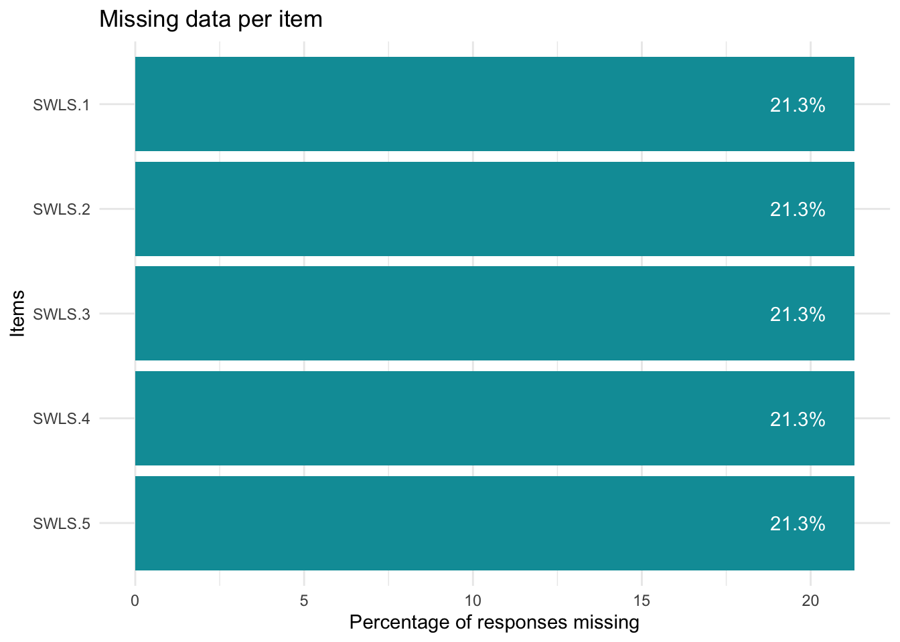
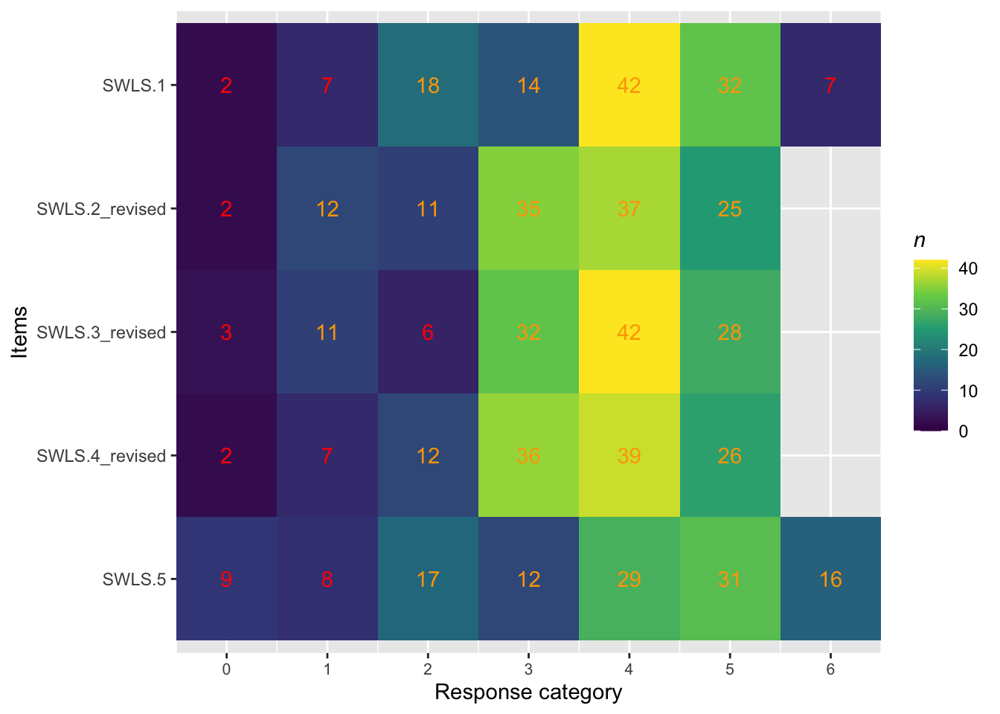
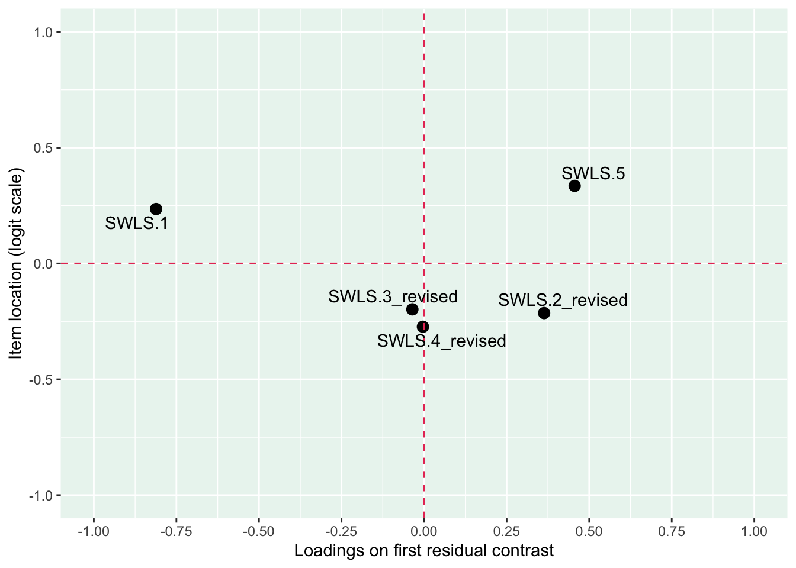
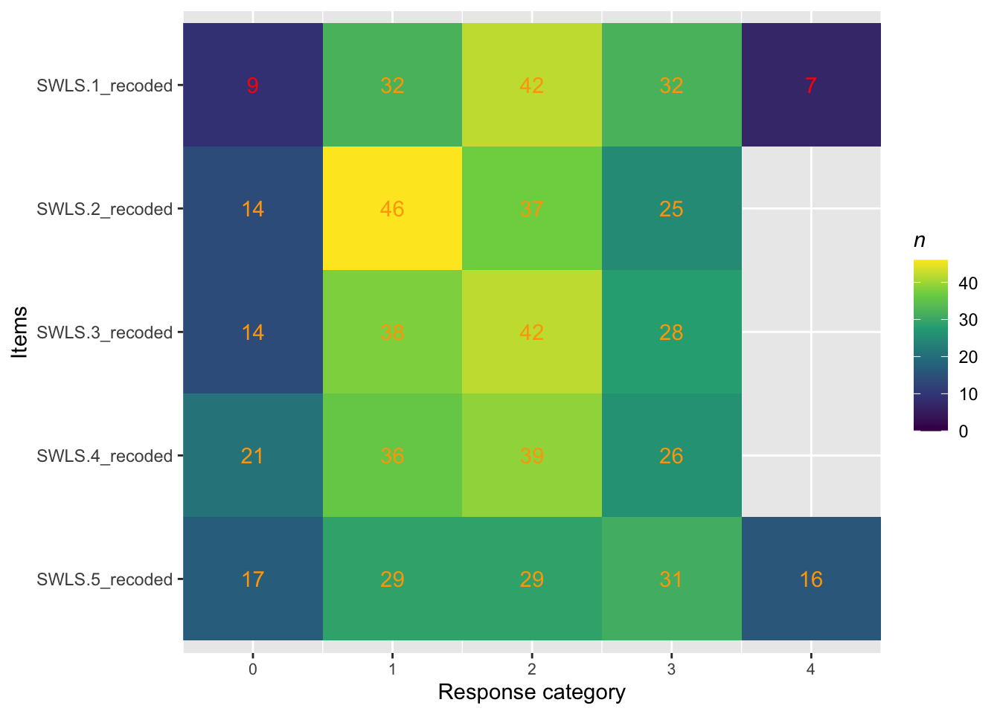
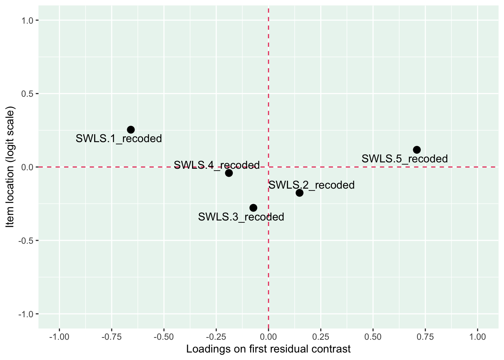

4.1 Satisfaction With Life Scale (SWLS): Rasch analysis and BEA validity investigation
The SWLS instrument is used as part of the validity investigation of BEA. First, SWLS will undergo Rasch analysis. Then a validity analysis of correlating BEA and SWLS thetas will be undertaken. Note that SWLS was not completed by the participants from the intervention study (Hockeystudien), therefore more missing values than in the BEA Rasch analysis are to be expected.
Code
itemlabels<-data.frame(itemnr =paste0("item",1:5), item =c("In most ways my life is close to my ideal.", "The conditions of my life are excellent.", "I am satisfied with my life.", "So far I have gotten the important things I want in life.", "If I could live my life over, I would change almost nothing."))RIlistitems(itemlabels, all.items =TRUE)
itemnr
item
item1
In most ways my life is close to my ideal.
item2
The conditions of my life are excellent.
item3
I am satisfied with my life.
item4
So far I have gotten the important things I want in life.
item5
If I could live my life over, I would change almost nothing.
4.2 Data preparation
The following data preparations are the basis for all analyses related to the Bulls Eye for Athletes (BEA) study. Code for scale step alterations and some of the modified data frames are presented next to their related sub-analysis to make the workflow more comprehensible.
#loading bulls eye for athletes datasetBullsEye_merged_data_final_without_comp_level<-read_excel("BullsEye_merged_data_final.xlsx")rename<-dplyr::rename#renaming bulls eye items from Swedish to EnglishBullsEye_merged_data_final_without_comp_level<-BullsEye_merged_data_final_without_comp_level%>%rename( BE_Competition =BE_Tavling, BE_Training =BE_Traning, BE_PreparationRecovery =BE_Forberedelser, BE_Life =BE_Livet, BE_Obstacles_Sport =BE_Hinder_Idrotten, BE_Obstacles_Life =BE_Hinder_Livet, BE_Competition_test2 =BE_Tavling_test2, BE_Training_test2 =BE_Traning_test2, BE_PreparationRecovery_test2 =BE_Forberedelser_test2, BE_Life_test2 =BE_Livet_test2, BE_Obstacles_Sport_test2 =BE_Hinder_Idrotten_test2, BE_Obstacles_Life_test2 =BE_Hinder_Livet_test2)#adding competition levelcomp_level_BE<-read_excel("comp_level_bulls eye.xlsx")BullsEye_merged_data_final<-full_join(BullsEye_merged_data_final_without_comp_level,comp_level_BE, by ="Användarnamn")#data corrections for BullsEye_merged_data_final#age reported as year of birthBullsEye_merged_data_final$Demografi.Alder[BullsEye_merged_data_final$Användarnamn=="1054fmsc"&BullsEye_merged_data_final$Demografi.Alder==95]<-24BullsEye_merged_data_final$Demografi.Alder[BullsEye_merged_data_final$Användarnamn=="1180smpq"&BullsEye_merged_data_final$Demografi.Alder==91]<-28BullsEye_merged_data_final$Demografi.Alder[BullsEye_merged_data_final$Användarnamn=="1183qhst"&BullsEye_merged_data_final$Demografi.Alder==93]<-26#participant stopped practice sport by test2 so values at test2 therefore not includedvariables_to_na_1086fcfd<-c("BE_Competition_test2","BE_Training_test2","BE_PreparationRecovery_test2","BE_Life_test2","BE_Obstacles_Sport_test2","BE_Obstacles_Life_test2","SMS-2.1_test2","SMS-2.2_test2","SMS-2.3_test2","SMS-2.4_test2","SMS-2.5_test2","SMS-2.6_test2","SMS-2.7_test2","SMS-2.8_test2","SMS-2.9_test2","SMS-2.10_test2","SMS-2.11_test2","SMS-2.12_test2","SMS-2.13_test2","SMS-2.14_test2","SMS-2.15_test2","SMS-2.16_test2","SMS-2.17_test2","SMS-2.18_test2")BullsEye_merged_data_final[BullsEye_merged_data_final$Användarnamn=="1086fcfd", variables_to_na_1086fcfd]<-NA#rename Valuing Questionnaire items abbrevation from VLQ to VQBullsEye_merged_data_final<-BullsEye_merged_data_final%>%rename_with(~gsub("^VLQ", "VQ", .), starts_with("VLQ"))#rename SMS-2 variablesnames(BullsEye_merged_data_final)<-gsub("SMS-2\\.", "SMS_2_", names(BullsEye_merged_data_final))#rename CSAI-2R variablesnames(BullsEye_merged_data_final)<-gsub("CSAI-2R\\.", "CSAI_2R_", names(BullsEye_merged_data_final))#create date and time difference variables, for survey 1 and survey 2# Ensure the variables are in POSIXct formatBullsEye_merged_data_final$Färdig_surveys_test1<-as.POSIXct(BullsEye_merged_data_final$Färdig_surveys_test1, format ="%Y-%m-%d %H:%M")BullsEye_merged_data_final$Färdig_surveys_test2<-as.POSIXct(BullsEye_merged_data_final$Färdig_surveys_test2, format ="%Y-%m-%d %H:%M")# Calculate the time difference in hours (for survey 1 and survey 2)BullsEye_merged_data_final$time_latency_survey_1_2_hours<-as.numeric(difftime(BullsEye_merged_data_final$Färdig_surveys_test2,BullsEye_merged_data_final$Färdig_surveys_test1, units ="hours"))# Calculate the time difference in days (for survey 1 and survey 2)BullsEye_merged_data_final$time_latency_survey_1_2_days<-as.numeric(difftime(BullsEye_merged_data_final$Färdig_surveys_test2,BullsEye_merged_data_final$Färdig_surveys_test1, units ="days"))#create date and time difference variables, for survey 1 and bulls eye 1# Ensure the variables are in POSIXct formatBullsEye_merged_data_final$Färdig_surveys_test1<-as.POSIXct(BullsEye_merged_data_final$Färdig_surveys_test1, format ="%Y-%m-%d %H:%M")BullsEye_merged_data_final$Skapat<-as.POSIXct(BullsEye_merged_data_final$Skapat, format ="%Y-%m-%d %H:%M:%S")# Calculate the time difference in hours (for survey 1 and bulls eye 1)BullsEye_merged_data_final$time_latency_survey1_bulls_eye1_hours<-as.numeric(difftime(BullsEye_merged_data_final$Skapat,BullsEye_merged_data_final$Färdig_surveys_test1, units ="hours"))# Calculate the time difference in days (for survey 1 and bulls eye 1)BullsEye_merged_data_final$time_latency_survey1_bulls_eye1_days<-as.numeric(difftime(BullsEye_merged_data_final$Skapat,BullsEye_merged_data_final$Färdig_surveys_test1, units ="days"))#create date and time difference variables, for bulls eye 1 and bulls eye 2# Ensure the variables are in POSIXct formatBullsEye_merged_data_final$Skapat<-as.POSIXct(BullsEye_merged_data_final$Skapat, format ="%Y-%m-%d %H:%M:%S")BullsEye_merged_data_final$Skapat_test2<-as.POSIXct(BullsEye_merged_data_final$Skapat_test2, format ="%Y-%m-%d %H:%M:%S")# Calculate the time difference in hours (for bulls eye 1 and bulls eye 2)BullsEye_merged_data_final$time_latency_bulls_eye1_2_hours<-as.numeric(difftime(BullsEye_merged_data_final$Skapat_test2,BullsEye_merged_data_final$Skapat, units ="hours"))# Calculate the time difference in days (for bulls eye 1 and bulls eye 2)BullsEye_merged_data_final$time_latency_bulls_eye1_2_days<-as.numeric(difftime(BullsEye_merged_data_final$Skapat_test2,BullsEye_merged_data_final$Skapat, units ="days"))#have checked and all date and time variables are correct filter<-dplyr::filter#hockeystudien bulls eye data:sheet1<-read_excel("hockeystudien intervention_bulls eye.xlsx", sheet =1)sheet1_filtered<-sheet1%>%filter(`Instansens namn`=="Vecka 1")%>%distinct(`Användarnamn`, .keep_all =TRUE)sheet2<-read_excel("hockeystudien intervention_bulls eye.xlsx", sheet =2)sheet2_filtered<-sheet2%>%filter(`Instansens namn`=="Vecka 1")%>%distinct(`Användarnamn`, .keep_all =TRUE)merged_data_hockeystudien_BE<-full_join(sheet1_filtered, sheet2_filtered, by ="Användarnamn")#hockeystudien demographicshockeystudien_intervention_demographics<-read_excel("hockeystudien intervention_demographics.xlsx", sheet =1)#corecting age for a participant in the dfhockeystudien_intervention_demographics$Demografi.Alder[hockeystudien_intervention_demographics$Användarnamn=="1077dhrv"&hockeystudien_intervention_demographics$Demografi.Alder==6]<-26#merge df BE and demographics from hockeystudienmerged_data_hockeystudien_BE_demographics<-full_join(merged_data_hockeystudien_BE,hockeystudien_intervention_demographics, by ="Användarnamn")#following in the hockeystudien study already exists in the bulls eye study, therefore mask:#mask 1029spns, 1061bgmb, 1043gsnq, 1046pkbz, 1062xhqd, 1070mfqq#1073znwk is also masked due to not completing the dart board ratings in BEA (only other parts of BEA) and therefore not contributing with any values for the statistical analysesusernames_to_exclude<-c("1029spns","1061bgmb","1043gsnq","1046pkbz","1062xhqd","1070mfqq","1073znwk")filtered_data<-merged_data_hockeystudien_BE_demographics%>%filter(!(`Användarnamn`%in%usernames_to_exclude))hockeystudien_bulls_eye_modified_data<-filtered_data%>%mutate(`Användarnamn` =paste0(`Användarnamn`, "_hockeystudien"))%>%# Append "_hockeystudien" to each valuerename( BE_Competition =Tavling, BE_Training =Traning, BE_PreparationRecovery =Forberedelser, BE_Life =Livet, BE_Obstacles_Sport =HinderSkala1, BE_Obstacles_Life =HinderSkala2)#preparations for merging datasets into superfinal version (bulls eye + hockeystudien_bulls eye)hockeystudien_bulls_eye_modified_data<-hockeystudien_bulls_eye_modified_data%>%mutate(from_hockeystudien =1)BullsEye_merged_data_final<-BullsEye_merged_data_final%>%mutate(from_hockeystudien =0)bulls_eye_merged_superfinal_data<-bind_rows(hockeystudien_bulls_eye_modified_data,BullsEye_merged_data_final)#use for analyses#BE items (dartboard), adjust (-1) to enable Rasch analysisBE_adjust<-c("BE_Competition","BE_Training","BE_PreparationRecovery","BE_Life","BE_Competition_test2","BE_Training_test2","BE_PreparationRecovery_test2","BE_Life_test2")bulls_eye_merged_superfinal_data[, BE_adjust]<-lapply(bulls_eye_merged_superfinal_data[, BE_adjust], function(x)x-1)#"Hinder", reverse items (low value = low in values-based living and compatible with other values items) and adjust (-1) to enable Rasch analysisHinder_reverse_and_adjust<-c("BE_Obstacles_Sport","BE_Obstacles_Life","BE_Obstacles_Sport_test2","BE_Obstacles_Life_test2")bulls_eye_merged_superfinal_data[, Hinder_reverse_and_adjust]<-lapply(bulls_eye_merged_superfinal_data[, Hinder_reverse_and_adjust], function(x)8-x-1)#ADAQ, adjust (-1) to enable Rasch analysisADAQ_adjust<-c("ADAQ.1","ADAQ.2","ADAQ.3","ADAQ.4","ADAQ.5","ADAQ.6","ADAQ.7")bulls_eye_merged_superfinal_data[, ADAQ_adjust]<-lapply(bulls_eye_merged_superfinal_data[, ADAQ_adjust], function(x)x-1)#SWLS, adjust (-1) to enable Rasch analysisSWLS_adjust<-c("SWLS.1", "SWLS.2", "SWLS.3", "SWLS.4", "SWLS.5")bulls_eye_merged_superfinal_data[, SWLS_adjust]<-lapply(bulls_eye_merged_superfinal_data[, SWLS_adjust], function(x)x-1)#VQ adjustments#some items were reversed in the scoring when exporting data from the web platform, but no items should be reversed in VQ when using each subscale separately. Some items were therefore reversed back.#items 1, 2, 6, 8, 10 (the VQ obstruction subscale) were reversed in the scoring and needs to be reversed back.#VQ already starts at zero and does therefore not need to be adjusted prior to Rasch analysis.bulls_eye_merged_superfinal_data<-bulls_eye_merged_superfinal_data%>%mutate(across(c("VQ.1", "VQ.2", "VQ.6", "VQ.8", "VQ.10"), ~6-.))#SMS-2 adjustments#SMS-2 consists of 18 items and 6 sub-scales divided into the following according to Pelletier et al. (2013). Some items were reversed in the scoring when exporting data from the web platform, but no items should be reversed in SMS-2. Some items were therefore reversed back.#Intrinsic regulation: items 3, 9, 17 (none reversed = correct)#Integrated regulation: items 4, 11, 14 (none reversed = correct) #Identified regulation: items 6, 12, 18 (none reversed = correct)#Introjected regulation: items 1, 7, 16 (items 1 and 7 are reversed in the scoring and needs to be reversed back)#External regulation: items 5, 8, 15 (items 5 and 8 are reversed in the scoring and needs to be reversed back)#Amotivated regulation: 2, 10, 13 (items 2, 10 and 13 are reversed in the scoring and needs to be reversed back)#(back) reverse scoring for items 1, 7, 5, 8, 2, 10, 13SMS2_items_to_reverse<-c("SMS_2_1", "SMS_2_7", "SMS_2_5", "SMS_2_8", "SMS_2_2", "SMS_2_10", "SMS_2_13")bulls_eye_merged_superfinal_data<-bulls_eye_merged_superfinal_data%>%mutate(across(all_of(SMS2_items_to_reverse), ~8-.))#SMS-2, adjust (-1) to enable Rasch analysisSMS2_adjust<-c("SMS_2_1","SMS_2_2","SMS_2_3","SMS_2_4","SMS_2_5","SMS_2_6","SMS_2_7","SMS_2_8","SMS_2_9","SMS_2_10","SMS_2_11","SMS_2_12","SMS_2_13","SMS_2_14","SMS_2_15","SMS_2_16","SMS_2_17","SMS_2_18")bulls_eye_merged_superfinal_data[, SMS2_adjust]<-lapply(bulls_eye_merged_superfinal_data[, SMS2_adjust], function(x)x-1)#CSAI-2R adjustments#CSAI-2R consists of 17 items and 3 sub-scales divided into the following according to Lundqvist & Hassmén (2005). Items will be renamed so they correspond to item numbers in Lundqvist & Hassmén (2005). Some items were reversed in the scoring when exporting data from the web platform (self-confidence sub-scale items), but no items needs to be reversed in CSAI-2R when looking at each sub-scale separately. Items in the self-confidence sub-scale were therefore reversed back.#items in brackets are the original item numbers found in Lundqvist & Hassmén (2005), items prior to brackets were the item numbers used on the web platform used for data collection in this study#cognitive anxiety sub-scale: items 2 (7), 5 (10), 7 (13), 9 (16), 13 (22)#somatic anxiety sub-scale: items 1 (5), 3 (8), 6 (11), 10 (17), 12 (20), 14 (23), 16 (26)#self-confidence sub-scale: items 4 (9), 8 (15), 11 (18), 15 (24), 17 (27) #rename CSAI-2R item names to correspond with Lundqvist & Hassmén (2005):item_mapping_CSAI2R<-c("CSAI_2R_1"="CSAI_2R_5","CSAI_2R_2"="CSAI_2R_7","CSAI_2R_3"="CSAI_2R_8","CSAI_2R_4"="CSAI_2R_9","CSAI_2R_5"="CSAI_2R_10","CSAI_2R_6"="CSAI_2R_11","CSAI_2R_7"="CSAI_2R_13","CSAI_2R_8"="CSAI_2R_15","CSAI_2R_9"="CSAI_2R_16","CSAI_2R_10"="CSAI_2R_17","CSAI_2R_11"="CSAI_2R_18","CSAI_2R_12"="CSAI_2R_20","CSAI_2R_13"="CSAI_2R_22","CSAI_2R_14"="CSAI_2R_23","CSAI_2R_15"="CSAI_2R_24","CSAI_2R_16"="CSAI_2R_26","CSAI_2R_17"="CSAI_2R_27")names(bulls_eye_merged_superfinal_data)<-sapply(names(bulls_eye_merged_superfinal_data),function(x)ifelse(x%in%names(item_mapping_CSAI2R), item_mapping_CSAI2R[x], x))#(back) reverse scoring for self-confidence sub-scale items 9, 15, 18, 24, 27CSAI2R_items_to_reverse<-c("CSAI_2R_9", "CSAI_2R_15", "CSAI_2R_18", "CSAI_2R_24", "CSAI_2R_27")bulls_eye_merged_superfinal_data<-bulls_eye_merged_superfinal_data%>%mutate(across(all_of(CSAI2R_items_to_reverse), ~5-.))#CSAI-2R, adjust (-1) to enable Rasch analysisCSAI2R_adjust<-c("CSAI_2R_5", "CSAI_2R_7", "CSAI_2R_8", "CSAI_2R_9", "CSAI_2R_10", "CSAI_2R_11","CSAI_2R_13", "CSAI_2R_15", "CSAI_2R_16", "CSAI_2R_17", "CSAI_2R_18", "CSAI_2R_20","CSAI_2R_22", "CSAI_2R_23", "CSAI_2R_24", "CSAI_2R_26", "CSAI_2R_27")bulls_eye_merged_superfinal_data[, CSAI2R_adjust]<-lapply(bulls_eye_merged_superfinal_data[, CSAI2R_adjust],function(x)x-1)#adding recoded bulls eye items (from the BEA Rasch analysis, needed here as the loading of data needs to be repeated for each quarto file)recode<-dplyr::recodebulls_eye_merged_superfinal_data<-bulls_eye_merged_superfinal_data%>%mutate(# Recoding BE_Competition (0+1; 2+3; 4+5) BE_Competition_recoded =recode(BE_Competition, `0` =0, `1` =0, `2` =1, `3` =1, `4` =2, `5` =2, `6` =3),# Recoding BE_Training (0+1) BE_Training_recoded =recode(BE_Training, `0` =0, `1` =0, `2` =1, `3` =2, `4` =3, `5` =4, `6` =5))
#preparing data frame with SWLS items SWLS_data_rasch<-bulls_eye_merged_superfinal_data[, c("SWLS.1", "SWLS.2", "SWLS.3", "SWLS.4", "SWLS.5")]#investigate missing valuesRImissing(SWLS_data_rasch)

Code
#removing missing values #in practice this means removing participants from the intervention study (Hockeystudien) that did not complete SWLSSWLS_data_rasch_na_omit<-SWLS_data_rasch%>%select(SWLS.1, SWLS.2, SWLS.3, SWLS.4, SWLS.5)%>%na.omit()RImissing(SWLS_data_rasch_na_omit)
[1] "No missing data."
Code
#tile plot (response category frequency for the items)RItileplot(SWLS_data_rasch_na_omit)

SWLS.2 has no responses in scale step one and will therefore be merged with scale step zero. SWLS.3 and SWLS.4 has no responses in scale step zero and will therefore be merged with scale step one.
SWLS.2 have no responses in scale step one and will therefore be merged with scale step zero. SWLS.3 and SWLS.4 have no responses in scale step zero and will therefore be merged with scale step one.
Code
#merging scale step zero and one in SWLS.2, SWLS.3, and SWLS.4 (creating SWLS.2_revised, SWLS.3_revised, and SWLS.4_revised)bulls_eye_merged_superfinal_data<-bulls_eye_merged_superfinal_data%>%mutate(# Recoding SWLS.2 (0+1) SWLS.2_revised =recode(SWLS.2, `0` =0, `1` =0, `2` =1, `3` =2, `4` =3, `5` =4, `6` =5),# Recoding SWLS.3 (0+1) SWLS.3_revised =recode(SWLS.3, `0` =0, `1` =0, `2` =1, `3` =2, `4` =3, `5` =4, `6` =5),# Recoding SWLS.4 (0+1) SWLS.4_revised =recode(SWLS.4, `0` =0, `1` =0, `2` =1, `3` =2, `4` =3, `5` =4, `6` =5))#preparing data frame with SWLS items including SWLS.2_revised, SWLS.3_revised, and SWLS.4_revisedSWLS_data_rasch<-bulls_eye_merged_superfinal_data[, c("SWLS.1", "SWLS.2_revised", "SWLS.3_revised", "SWLS.4_revised", "SWLS.5")]#removing missing values #in practice this means removing participants from the intervention study (Hockeystudien) that did not complete SWLSSWLS_data_rasch_na_omit<-SWLS_data_rasch%>%select(SWLS.1, SWLS.2_revised, SWLS.3_revised, SWLS.4_revised, SWLS.5)%>%na.omit()RImissing(SWLS_data_rasch_na_omit)
#conditional likelihood ratio tests (CLR)#a test of homogeneity that assesses whether item parameters are homogeneous across all levels of theta clr_tests(SWLS_data_rasch_na_omit, model ="PCM")
Conditional Likelihood Ratio Tests:
clr df pvalue sig
overall 15.8 26 0.94
Code
#conditional item fit (assessing unidimensionaliity)simfit1_SWLS<-RIgetfit(SWLS_data_rasch_na_omit, iterations =100, cpu =10)RIitemfit(SWLS_data_rasch_na_omit, simfit1_SWLS, cutoff =c(0.005, 0.995))
Item
InfitMSQ
Infit thresholds
OutfitMSQ
Outfit thresholds
Infit diff
Outfit diff
Relative location
SWLS.1
1.096
[0.792, 1.317]
1.213
[0.791, 1.289]
no misfit
no misfit
-0.48
SWLS.2_revised
1.128
[0.753, 1.205]
1.188
[0.779, 1.256]
no misfit
no misfit
-0.87
SWLS.3_revised
0.814
[0.731, 1.256]
0.714
[0.719, 1.332]
no misfit
0.005
-0.86
SWLS.4_revised
0.775
[0.812, 1.247]
0.839
[0.752, 1.212]
0.037
no misfit
-0.93
SWLS.5
1.2
[0.751, 1.278]
1.162
[0.744, 1.304]
no misfit
no misfit
-0.32
Note:
MSQ values based on conditional calculations (n = 122 complete cases). Simulation based thresholds from 81 simulated datasets.
#loadings on the first residual contrast (assessing clusters in data or multidimensionality)RIloadLoc(SWLS_data_rasch_na_omit)

Code
#residual correlationsresid_cor_SWLS<-RIgetResidCor(SWLS_data_rasch_na_omit, iterations =800, cpu =10)RIresidcorr(SWLS_data_rasch_na_omit, cutoff =resid_cor_SWLS$p99)
SWLS.1
SWLS.2_revised
SWLS.3_revised
SWLS.4_revised
SWLS.5
SWLS.1
SWLS.2_revised
-0.24
SWLS.3_revised
-0.12
-0.23
SWLS.4_revised
-0.17
-0.13
0.12
SWLS.5
-0.33
-0.26
-0.28
-0.28
Note:
Relative cut-off value is 0.111, which is 0.303 above the average correlation (-0.192). Correlations above the cut-off are highlighted in red text.
Code
#partial gamma coefficients (assessing local independence)clean_names<-janitor::clean_namesfilter<-dplyr::filterRIpartgamLD(SWLS_data_rasch_na_omit)#shows only significant results
Item 1
Item 2
Partial gamma
SE
Lower CI
Upper CI
Adjusted p-value (BH)
SWLS.3_revised
SWLS.4_revised
0.47
0.149
0.178
0.762
0.032
Code
partgam_LD(as.data.frame(SWLS_data_rasch_na_omit))#shows all output, also non-significant results
#note: response categories have been analyzed using RIitemCats() function (in the easyRasch package) that estimates ICC plots using the eRm package. When there are response categories with fewer than 3 responses the easyRasch package uses estimation from the mirt package instead in the RIitemparams() and RItargeting() functions, and explain potential slight variations found in those outputs compared to the RIitemCats output. For transparency, ICC plots from the mirt package are therefore also displayed. Response category analysis was however consequently conducted using the RIitemCats() function that uses estimation from the eRm package.
Code
#analysis of reliability with Test Information Function (TIF)#first output shows without sample PSI and second output with sample PSI RItif(na.omit(SWLS_data_rasch_na_omit))
Based on the analysis of the response categories and threshold locations, scale steps were merged and recoded so that each kept scale step had the highest response probability at some point on the person location scale, and also so that all threshold locations were in the right order for all items. Recoded items were given new names with the abbrevation “_recoded”.
#preparing data frame for SWLS recodedSWLS_data_rasch_recoded<-bulls_eye_merged_superfinal_data[, c("SWLS.1_recoded","SWLS.2_recoded","SWLS.3_recoded","SWLS.4_recoded","SWLS.5_recoded")]#investigate missing values RImissing(SWLS_data_rasch_recoded)
#note: response categories have been analyzed using RIitemCats() function (in the easyRasch package) that estimates ICC plots using the eRm package. When there are response categories with fewer than 3 responses the easyRasch package uses estimation from the mirt package instead in the RIitemparams() and RItargeting() functions, and explain potential slight variations found in those outputs compared to the RIitemCats output. For transparency, ICC plots from the mirt package are therefore also displayed. Response category analysis was however consequently conducted using the RIitemCats() function that uses estimation from the eRm package.
Code
#tile plot (response category frequency for the recoded items) RItileplot(SWLS_data_rasch_recoded_na_omit)

Code
#conditional likelihood ratio tests (CLR)#a test of homogeneity that assesses whether item parameters are homogeneous across all levels of theta clr_tests(SWLS_data_rasch_recoded_na_omit, model ="PCM")
Conditional Likelihood Ratio Tests:
clr df pvalue sig
overall 14.4 16 0.57
Code
#re-analysis of conditional item fit (assessing unidimensionaliity)simfit1_SWLS_recoded<-RIgetfit(SWLS_data_rasch_recoded_na_omit, iterations =100, cpu =10)RIitemfit(SWLS_data_rasch_recoded_na_omit, simfit1_SWLS_recoded, cutoff =c(0.005, 0.995))
Item
InfitMSQ
Infit thresholds
OutfitMSQ
Outfit thresholds
Infit diff
Outfit diff
Relative location
SWLS.1_recoded
1.146
[0.811, 1.26]
1.154
[0.838, 1.272]
no misfit
no misfit
0.14
SWLS.2_recoded
1.09
[0.75, 1.249]
1.173
[0.748, 1.235]
no misfit
no misfit
-0.29
SWLS.3_recoded
0.769
[0.776, 1.225]
0.725
[0.762, 1.29]
0.007
0.037
-0.40
SWLS.4_recoded
0.851
[0.768, 1.323]
0.853
[0.772, 1.39]
no misfit
no misfit
-0.16
SWLS.5_recoded
1.122
[0.703, 1.284]
1.186
[0.712, 1.36]
no misfit
no misfit
0.00
Note:
MSQ values based on conditional calculations (n = 122 complete cases). Simulation based thresholds from 100 simulated datasets.
#re-analysis of item restscoresRIrestscore(SWLS_data_rasch_recoded_na_omit)
Item
Observed value
Model expected value
Absolute difference
Adjusted p-value (BH)
Statistical significance level
Location
Relative location
SWLS.1_recoded
0.44
0.52
0.08
0.441
0.25
0.14
SWLS.2_recoded
0.48
0.52
0.04
0.775
-0.18
-0.29
SWLS.3_recoded
0.66
0.52
0.14
0.095
.
-0.28
-0.40
SWLS.4_recoded
0.60
0.52
0.08
0.441
-0.04
-0.16
SWLS.5_recoded
0.52
0.54
0.02
0.775
0.12
0.00
Code
#re-analyzing loadings on the first residual contrast (assessing clusters in data or multidimensionality)RIloadLoc(SWLS_data_rasch_recoded_na_omit)

Code
#re-analysis of residual correlationsresid_cor_SWLS_recoded<-RIgetResidCor(SWLS_data_rasch_recoded_na_omit, iterations =800, cpu =10)RIresidcorr(SWLS_data_rasch_recoded_na_omit, cutoff =resid_cor_SWLS_recoded$p99)
SWLS.1_recoded
SWLS.2_recoded
SWLS.3_recoded
SWLS.4_recoded
SWLS.5_recoded
SWLS.1_recoded
SWLS.2_recoded
-0.25
SWLS.3_recoded
-0.17
-0.26
SWLS.4_recoded
-0.2
-0.13
0.09
SWLS.5_recoded
-0.3
-0.21
-0.18
-0.36
Note:
Relative cut-off value is 0.095, which is 0.293 above the average correlation (-0.198). Correlations above the cut-off are highlighted in red text.
Code
#re-analysis of partial gamma coefficients (assessing local independence)RIpartgamLD(SWLS_data_rasch_recoded_na_omit)#shows only significant results
[1] "No statistically significant local dependency found."
Code
partgam_LD(as.data.frame(SWLS_data_rasch_recoded_na_omit))#shows all output, also non-significant results
Item location is the average of the thresholds for each item.
Code
#re-analysis of reliability with Test Information Function (TIF)#first output shows without sample PSI and second output with sample PSI RItif(na.omit(SWLS_data_rasch_recoded_na_omit))
SWLS.3 demonstrates some problems being borderline overfit and possibly redundant to the model (see conditional item fit analysis). Further, some indications of problems with local dependence between SWLS.3 and SWLS.4 with a residual correlation close to the cut-off value. However, the partial gamma coefficient analysis is no longer significant between the items as it was prior to adjusting the response categories. SWLS.3 was considered a candidate for removal, but is kept in the scale for the validity analysis.
4.5 SWLS and BEA validity analysis
Validity between SWLS and BEA is investigated by correlation analysis. As both scales has undergone Rasch analysis, participants theta estimates (computed with weighted likelihood estimation - WLE) will be correlated, and since thetas are interval data Pearson’s correlation is applied.
#complete cases data frame for validity analyses#removing missing values in relevant items for complete cases analysis#only BE items and one item from the other scales in the bulls eye study#is needed (in this case the SubjektivPrestation item) #this is because there are no missing values for the other scales #after the intervention study (Hockeystudien) participants have been removed#therefore this data frame will work for all validity analyses items_validity_analyses<-c("BE_Competition_recoded","BE_Training_recoded","BE_PreparationRecovery","BE_Life","SubjektivPrestation")data_complete_cases<-bulls_eye_merged_superfinal_data[complete.cases(bulls_eye_merged_superfinal_data[, items_validity_analyses]), ]#155 participants to begin with#33 participants from the intervention study (Hockeystudien) were removed (did not complete any scale beside Bulls Eye)#1 participant (not from the intervention study) who completed the other scales but not the dartboard in Bulls Eye (only other parts of BE) and were therefore removed#results in a complete cases data frame with 121 participants nrow(data_complete_cases)
[1] 121
Code
#item data framesBE_validity_analyses<-data_complete_cases[, c("BE_Competition_recoded","BE_Training_recoded","BE_PreparationRecovery","BE_Life")]SWLS_validity_analyses<-data_complete_cases[, c("SWLS.1_recoded","SWLS.2_recoded","SWLS.3_recoded","SWLS.4_recoded","SWLS.5_recoded")]#extracting thetasBE_thetas<-RIestThetas(BE_validity_analyses)SWLS_thetas<-RIestThetas(SWLS_validity_analyses)#adding thetas to the data framedata_complete_cases$BE_thetas_WLE<-BE_thetas$WLEdata_complete_cases$SWLS_thetas_WLE<-SWLS_thetas$WLE
Visual inspection of potential outliers was only conducted for BEA to have the same sub-sample across validity correlation analyses. One statistical outlier was detected and marked in red in the plot below. This participant was row 28 in the data frame and will be removed in the upcoming correlation.
Code
{plot(data_complete_cases$BE_thetas_WLE, main ="Index Plot of BE_thetas_WLE", ylab ="BE Theta", xlab ="Participant Index", pch =20)abline(h =mean(data_complete_cases$BE_thetas_WLE), col ="blue", lty =2)points(28, data_complete_cases$BE_thetas_WLE[28], col ="red", pch =19)}
Code
#participant on row 28 is an outlier and therefore removedcorrelation_BE_SWLS<-cor_test(data_complete_cases[-28, ], x ="BE_thetas_WLE", y ="SWLS_thetas_WLE", method ="pearson")print(correlation_BE_SWLS)
Parameter1 | Parameter2 | r | 95% CI | t(118) | p
--------------------------------------------------------------------------
BE_thetas_WLE | SWLS_thetas_WLE | 0.48 | [0.33, 0.61] | 5.97 | < .001***
Observations: 120
Some participants did not complete BEA and SWLS during the same day as intended. Therefore, a sensitivity analysis is conducted.
Code
#creating data frame with only participants that completed Bulls Eye and the other scales during the same day#since 17 participants did not (has already been checked in a prior validity analysis), 104 participants will remain data_complete_cases_less_than_1day<-subset(data_complete_cases, time_latency_survey1_bulls_eye1_days<1)
Code
#looking only at participants who completed Bulls Eye and the other scales during the same day (N = 104)#sensitivity analysis SWLS and BEBE_validity_analyses_less1day<-data_complete_cases_less_than_1day[, c("BE_Competition_recoded","BE_Training_recoded","BE_PreparationRecovery","BE_Life")]SWLS_validity_analyses_less1day<-data_complete_cases_less_than_1day[, c("SWLS.1_recoded","SWLS.2_recoded","SWLS.3_recoded","SWLS.4_recoded","SWLS.5_recoded")]#extracting thetasBE_thetas_less1day<-RIestThetas(BE_validity_analyses_less1day)SWLS_thetas_less1day<-RIestThetas(SWLS_validity_analyses_less1day)#adding thetas to the data framedata_complete_cases_less_than_1day$BE_thetas_less1day_WLE<-BE_thetas_less1day$WLEdata_complete_cases_less_than_1day$SWLS_thetas_less1day_WLE<-SWLS_thetas_less1day$WLE#analysis only with participants completing Bulls Eye and SWLS the same day#removing the outlier, now on row 20 in the data framecorrelation_BE_SWLS_less1day<-cor_test(data_complete_cases_less_than_1day[-20, ], x ="BE_thetas_less1day_WLE", y ="SWLS_thetas_less1day_WLE", method ="pearson")print(correlation_BE_SWLS_less1day)
#we can also check if there is a statistically significant difference #by adding same or different day as a predictor #the outlier on row 28 in the data frame is removeddata_complete_cases_sensitivity_analysis<-data_complete_cases%>%mutate(group =factor(ifelse(time_latency_survey1_bulls_eye1_days<1,"same_day","different_day")))m0_swls<-lm(SWLS_thetas_WLE~BE_thetas_WLE, data =data_complete_cases_sensitivity_analysis[-28, ])m1_swls<-lm(SWLS_thetas_WLE~BE_thetas_WLE+group, data =data_complete_cases_sensitivity_analysis[-28, ])anova(m0_swls, m1_swls)
Analysis of Variance Table
Model 1: SWLS_thetas_WLE ~ BE_thetas_WLE
Model 2: SWLS_thetas_WLE ~ BE_thetas_WLE + group
Res.Df RSS Df Sum of Sq F Pr(>F)
1 118 156.77
2 117 153.97 1 2.8041 2.1309 0.147
Adding whether BE and SWLS were completed during the same day or not as a predictor did not significantly alter the results.
Source Code
---title: "Satisfaction With Life Scale (SWLS)"title-block-banner: "#182D09"title-block-banner-color: "#FFFFFF"format: htmlexecute: echo: true warning: false message: false cache: trueeditor_options: markdown: wrap: 72 chunk_output_type: console---## Satisfaction With Life Scale (SWLS): Rasch analysis and BEA validity investigation The SWLS instrument is used as part of the validity investigation of BEA. First, SWLS will undergo Rasch analysis. Then a validity analysis of correlating BEA and SWLS thetas will be undertaken. Note that SWLS was not completed by the participants from the intervention study (Hockeystudien), therefore more missing values than in the BEA Rasch analysis are to be expected.```{r}itemlabels <-data.frame(itemnr =paste0("item",1:5),item =c("In most ways my life is close to my ideal.", "The conditions of my life are excellent.", "I am satisfied with my life.", "So far I have gotten the important things I want in life.", "If I could live my life over, I would change almost nothing."))RIlistitems(itemlabels, all.items =TRUE)```## Data preparationThe following data preparations are the basis for all analyses related to the Bulls Eye for Athletes (BEA) study. Code for scale step alterations and some of the modified data frames are presented next to their related sub-analysis to make the workflow more comprehensible.::: panel-tabset### R packages```{r}#| label: R packages #| echo: truelibrary(readxl)library(tidyverse)library(eRm)library(devtools)library(easyRasch)library(iarm)library(mirt)library(conflicted)library(car)library(easystats)```### Data preparation```{r}#| label: Data preparation#loading bulls eye for athletes datasetBullsEye_merged_data_final_without_comp_level <-read_excel("BullsEye_merged_data_final.xlsx")rename <- dplyr::rename#renaming bulls eye items from Swedish to EnglishBullsEye_merged_data_final_without_comp_level <- BullsEye_merged_data_final_without_comp_level %>%rename(BE_Competition = BE_Tavling,BE_Training = BE_Traning,BE_PreparationRecovery = BE_Forberedelser,BE_Life = BE_Livet,BE_Obstacles_Sport = BE_Hinder_Idrotten,BE_Obstacles_Life = BE_Hinder_Livet,BE_Competition_test2 = BE_Tavling_test2,BE_Training_test2 = BE_Traning_test2,BE_PreparationRecovery_test2 = BE_Forberedelser_test2,BE_Life_test2 = BE_Livet_test2,BE_Obstacles_Sport_test2 = BE_Hinder_Idrotten_test2,BE_Obstacles_Life_test2 = BE_Hinder_Livet_test2 )#adding competition levelcomp_level_BE <-read_excel("comp_level_bulls eye.xlsx")BullsEye_merged_data_final <-full_join(BullsEye_merged_data_final_without_comp_level, comp_level_BE,by ="Användarnamn")#data corrections for BullsEye_merged_data_final#age reported as year of birthBullsEye_merged_data_final$Demografi.Alder[BullsEye_merged_data_final$Användarnamn =="1054fmsc"& BullsEye_merged_data_final$Demografi.Alder ==95] <-24BullsEye_merged_data_final$Demografi.Alder[BullsEye_merged_data_final$Användarnamn =="1180smpq"& BullsEye_merged_data_final$Demografi.Alder ==91] <-28BullsEye_merged_data_final$Demografi.Alder[BullsEye_merged_data_final$Användarnamn =="1183qhst"& BullsEye_merged_data_final$Demografi.Alder ==93] <-26#participant stopped practice sport by test2 so values at test2 therefore not includedvariables_to_na_1086fcfd <-c("BE_Competition_test2","BE_Training_test2","BE_PreparationRecovery_test2","BE_Life_test2","BE_Obstacles_Sport_test2","BE_Obstacles_Life_test2","SMS-2.1_test2","SMS-2.2_test2","SMS-2.3_test2","SMS-2.4_test2","SMS-2.5_test2","SMS-2.6_test2","SMS-2.7_test2","SMS-2.8_test2","SMS-2.9_test2","SMS-2.10_test2","SMS-2.11_test2","SMS-2.12_test2","SMS-2.13_test2","SMS-2.14_test2","SMS-2.15_test2","SMS-2.16_test2","SMS-2.17_test2","SMS-2.18_test2")BullsEye_merged_data_final[BullsEye_merged_data_final$Användarnamn =="1086fcfd", variables_to_na_1086fcfd] <-NA#rename Valuing Questionnaire items abbrevation from VLQ to VQBullsEye_merged_data_final <- BullsEye_merged_data_final %>%rename_with( ~gsub("^VLQ", "VQ", .), starts_with("VLQ"))#rename SMS-2 variablesnames(BullsEye_merged_data_final) <-gsub("SMS-2\\.", "SMS_2_", names(BullsEye_merged_data_final))#rename CSAI-2R variablesnames(BullsEye_merged_data_final) <-gsub("CSAI-2R\\.", "CSAI_2R_", names(BullsEye_merged_data_final))#create date and time difference variables, for survey 1 and survey 2# Ensure the variables are in POSIXct formatBullsEye_merged_data_final$Färdig_surveys_test1 <-as.POSIXct(BullsEye_merged_data_final$Färdig_surveys_test1, format ="%Y-%m-%d %H:%M")BullsEye_merged_data_final$Färdig_surveys_test2 <-as.POSIXct(BullsEye_merged_data_final$Färdig_surveys_test2, format ="%Y-%m-%d %H:%M")# Calculate the time difference in hours (for survey 1 and survey 2)BullsEye_merged_data_final$time_latency_survey_1_2_hours <-as.numeric(difftime( BullsEye_merged_data_final$Färdig_surveys_test2, BullsEye_merged_data_final$Färdig_surveys_test1,units ="hours" ))# Calculate the time difference in days (for survey 1 and survey 2)BullsEye_merged_data_final$time_latency_survey_1_2_days <-as.numeric(difftime( BullsEye_merged_data_final$Färdig_surveys_test2, BullsEye_merged_data_final$Färdig_surveys_test1,units ="days" ))#create date and time difference variables, for survey 1 and bulls eye 1# Ensure the variables are in POSIXct formatBullsEye_merged_data_final$Färdig_surveys_test1 <-as.POSIXct(BullsEye_merged_data_final$Färdig_surveys_test1, format ="%Y-%m-%d %H:%M")BullsEye_merged_data_final$Skapat <-as.POSIXct(BullsEye_merged_data_final$Skapat, format ="%Y-%m-%d %H:%M:%S")# Calculate the time difference in hours (for survey 1 and bulls eye 1)BullsEye_merged_data_final$time_latency_survey1_bulls_eye1_hours <-as.numeric(difftime( BullsEye_merged_data_final$Skapat, BullsEye_merged_data_final$Färdig_surveys_test1,units ="hours" ))# Calculate the time difference in days (for survey 1 and bulls eye 1)BullsEye_merged_data_final$time_latency_survey1_bulls_eye1_days <-as.numeric(difftime( BullsEye_merged_data_final$Skapat, BullsEye_merged_data_final$Färdig_surveys_test1,units ="days" ))#create date and time difference variables, for bulls eye 1 and bulls eye 2# Ensure the variables are in POSIXct formatBullsEye_merged_data_final$Skapat <-as.POSIXct(BullsEye_merged_data_final$Skapat, format ="%Y-%m-%d %H:%M:%S")BullsEye_merged_data_final$Skapat_test2 <-as.POSIXct(BullsEye_merged_data_final$Skapat_test2, format ="%Y-%m-%d %H:%M:%S")# Calculate the time difference in hours (for bulls eye 1 and bulls eye 2)BullsEye_merged_data_final$time_latency_bulls_eye1_2_hours <-as.numeric(difftime( BullsEye_merged_data_final$Skapat_test2, BullsEye_merged_data_final$Skapat,units ="hours" ))# Calculate the time difference in days (for bulls eye 1 and bulls eye 2)BullsEye_merged_data_final$time_latency_bulls_eye1_2_days <-as.numeric(difftime( BullsEye_merged_data_final$Skapat_test2, BullsEye_merged_data_final$Skapat,units ="days" ))#have checked and all date and time variables are correct filter <- dplyr::filter#hockeystudien bulls eye data:sheet1 <-read_excel("hockeystudien intervention_bulls eye.xlsx", sheet =1)sheet1_filtered <- sheet1 %>%filter(`Instansens namn`=="Vecka 1") %>%distinct(`Användarnamn`, .keep_all =TRUE)sheet2 <-read_excel("hockeystudien intervention_bulls eye.xlsx", sheet =2)sheet2_filtered <- sheet2 %>%filter(`Instansens namn`=="Vecka 1") %>%distinct(`Användarnamn`, .keep_all =TRUE)merged_data_hockeystudien_BE <-full_join(sheet1_filtered, sheet2_filtered, by ="Användarnamn")#hockeystudien demographicshockeystudien_intervention_demographics <-read_excel("hockeystudien intervention_demographics.xlsx", sheet =1)#corecting age for a participant in the dfhockeystudien_intervention_demographics$Demografi.Alder[hockeystudien_intervention_demographics$Användarnamn =="1077dhrv"& hockeystudien_intervention_demographics$Demografi.Alder ==6] <-26#merge df BE and demographics from hockeystudienmerged_data_hockeystudien_BE_demographics <-full_join(merged_data_hockeystudien_BE, hockeystudien_intervention_demographics,by ="Användarnamn")#following in the hockeystudien study already exists in the bulls eye study, therefore mask:#mask 1029spns, 1061bgmb, 1043gsnq, 1046pkbz, 1062xhqd, 1070mfqq#1073znwk is also masked due to not completing the dart board ratings in BEA (only other parts of BEA) and therefore not contributing with any values for the statistical analysesusernames_to_exclude <-c("1029spns","1061bgmb","1043gsnq","1046pkbz","1062xhqd","1070mfqq","1073znwk")filtered_data <- merged_data_hockeystudien_BE_demographics %>%filter(!(`Användarnamn`%in% usernames_to_exclude))hockeystudien_bulls_eye_modified_data <- filtered_data %>%mutate(`Användarnamn`=paste0(`Användarnamn`, "_hockeystudien")) %>%# Append "_hockeystudien" to each valuerename(BE_Competition = Tavling,BE_Training = Traning,BE_PreparationRecovery = Forberedelser,BE_Life = Livet,BE_Obstacles_Sport = HinderSkala1,BE_Obstacles_Life = HinderSkala2 )#preparations for merging datasets into superfinal version (bulls eye + hockeystudien_bulls eye)hockeystudien_bulls_eye_modified_data <- hockeystudien_bulls_eye_modified_data %>%mutate(from_hockeystudien =1)BullsEye_merged_data_final <- BullsEye_merged_data_final %>%mutate(from_hockeystudien =0)bulls_eye_merged_superfinal_data <-bind_rows(hockeystudien_bulls_eye_modified_data, BullsEye_merged_data_final) #use for analyses#BE items (dartboard), adjust (-1) to enable Rasch analysisBE_adjust <-c("BE_Competition","BE_Training","BE_PreparationRecovery","BE_Life","BE_Competition_test2","BE_Training_test2","BE_PreparationRecovery_test2","BE_Life_test2")bulls_eye_merged_superfinal_data[, BE_adjust] <-lapply(bulls_eye_merged_superfinal_data[, BE_adjust], function(x) x -1)#"Hinder", reverse items (low value = low in values-based living and compatible with other values items) and adjust (-1) to enable Rasch analysisHinder_reverse_and_adjust <-c("BE_Obstacles_Sport","BE_Obstacles_Life","BE_Obstacles_Sport_test2","BE_Obstacles_Life_test2")bulls_eye_merged_superfinal_data[, Hinder_reverse_and_adjust] <-lapply(bulls_eye_merged_superfinal_data[, Hinder_reverse_and_adjust], function(x)8- x -1)#ADAQ, adjust (-1) to enable Rasch analysisADAQ_adjust <-c("ADAQ.1","ADAQ.2","ADAQ.3","ADAQ.4","ADAQ.5","ADAQ.6","ADAQ.7")bulls_eye_merged_superfinal_data[, ADAQ_adjust] <-lapply(bulls_eye_merged_superfinal_data[, ADAQ_adjust], function(x) x -1)#SWLS, adjust (-1) to enable Rasch analysisSWLS_adjust <-c("SWLS.1", "SWLS.2", "SWLS.3", "SWLS.4", "SWLS.5")bulls_eye_merged_superfinal_data[, SWLS_adjust] <-lapply(bulls_eye_merged_superfinal_data[, SWLS_adjust], function(x) x -1)#VQ adjustments#some items were reversed in the scoring when exporting data from the web platform, but no items should be reversed in VQ when using each subscale separately. Some items were therefore reversed back.#items 1, 2, 6, 8, 10 (the VQ obstruction subscale) were reversed in the scoring and needs to be reversed back.#VQ already starts at zero and does therefore not need to be adjusted prior to Rasch analysis.bulls_eye_merged_superfinal_data <- bulls_eye_merged_superfinal_data %>%mutate(across(c("VQ.1", "VQ.2", "VQ.6", "VQ.8", "VQ.10"), ~6- .))#SMS-2 adjustments#SMS-2 consists of 18 items and 6 sub-scales divided into the following according to Pelletier et al. (2013). Some items were reversed in the scoring when exporting data from the web platform, but no items should be reversed in SMS-2. Some items were therefore reversed back.#Intrinsic regulation: items 3, 9, 17 (none reversed = correct)#Integrated regulation: items 4, 11, 14 (none reversed = correct) #Identified regulation: items 6, 12, 18 (none reversed = correct)#Introjected regulation: items 1, 7, 16 (items 1 and 7 are reversed in the scoring and needs to be reversed back)#External regulation: items 5, 8, 15 (items 5 and 8 are reversed in the scoring and needs to be reversed back)#Amotivated regulation: 2, 10, 13 (items 2, 10 and 13 are reversed in the scoring and needs to be reversed back)#(back) reverse scoring for items 1, 7, 5, 8, 2, 10, 13SMS2_items_to_reverse <-c("SMS_2_1", "SMS_2_7", "SMS_2_5", "SMS_2_8", "SMS_2_2", "SMS_2_10", "SMS_2_13")bulls_eye_merged_superfinal_data <- bulls_eye_merged_superfinal_data %>%mutate(across(all_of(SMS2_items_to_reverse), ~8- .))#SMS-2, adjust (-1) to enable Rasch analysisSMS2_adjust <-c("SMS_2_1","SMS_2_2","SMS_2_3","SMS_2_4","SMS_2_5","SMS_2_6","SMS_2_7","SMS_2_8","SMS_2_9","SMS_2_10","SMS_2_11","SMS_2_12","SMS_2_13","SMS_2_14","SMS_2_15","SMS_2_16","SMS_2_17","SMS_2_18")bulls_eye_merged_superfinal_data[, SMS2_adjust] <-lapply(bulls_eye_merged_superfinal_data[, SMS2_adjust], function(x) x -1)#CSAI-2R adjustments#CSAI-2R consists of 17 items and 3 sub-scales divided into the following according to Lundqvist & Hassmén (2005). Items will be renamed so they correspond to item numbers in Lundqvist & Hassmén (2005). Some items were reversed in the scoring when exporting data from the web platform (self-confidence sub-scale items), but no items needs to be reversed in CSAI-2R when looking at each sub-scale separately. Items in the self-confidence sub-scale were therefore reversed back.#items in brackets are the original item numbers found in Lundqvist & Hassmén (2005), items prior to brackets were the item numbers used on the web platform used for data collection in this study#cognitive anxiety sub-scale: items 2 (7), 5 (10), 7 (13), 9 (16), 13 (22)#somatic anxiety sub-scale: items 1 (5), 3 (8), 6 (11), 10 (17), 12 (20), 14 (23), 16 (26)#self-confidence sub-scale: items 4 (9), 8 (15), 11 (18), 15 (24), 17 (27) #rename CSAI-2R item names to correspond with Lundqvist & Hassmén (2005):item_mapping_CSAI2R <-c("CSAI_2R_1"="CSAI_2R_5","CSAI_2R_2"="CSAI_2R_7","CSAI_2R_3"="CSAI_2R_8","CSAI_2R_4"="CSAI_2R_9","CSAI_2R_5"="CSAI_2R_10","CSAI_2R_6"="CSAI_2R_11","CSAI_2R_7"="CSAI_2R_13","CSAI_2R_8"="CSAI_2R_15","CSAI_2R_9"="CSAI_2R_16","CSAI_2R_10"="CSAI_2R_17","CSAI_2R_11"="CSAI_2R_18","CSAI_2R_12"="CSAI_2R_20","CSAI_2R_13"="CSAI_2R_22","CSAI_2R_14"="CSAI_2R_23","CSAI_2R_15"="CSAI_2R_24","CSAI_2R_16"="CSAI_2R_26","CSAI_2R_17"="CSAI_2R_27")names(bulls_eye_merged_superfinal_data) <-sapply(names(bulls_eye_merged_superfinal_data),function(x) ifelse(x %in%names(item_mapping_CSAI2R), item_mapping_CSAI2R[x], x))#(back) reverse scoring for self-confidence sub-scale items 9, 15, 18, 24, 27CSAI2R_items_to_reverse <-c("CSAI_2R_9", "CSAI_2R_15", "CSAI_2R_18", "CSAI_2R_24", "CSAI_2R_27")bulls_eye_merged_superfinal_data <- bulls_eye_merged_superfinal_data %>%mutate(across(all_of(CSAI2R_items_to_reverse), ~5- .))#CSAI-2R, adjust (-1) to enable Rasch analysisCSAI2R_adjust <-c("CSAI_2R_5", "CSAI_2R_7", "CSAI_2R_8", "CSAI_2R_9", "CSAI_2R_10", "CSAI_2R_11","CSAI_2R_13", "CSAI_2R_15", "CSAI_2R_16", "CSAI_2R_17", "CSAI_2R_18", "CSAI_2R_20","CSAI_2R_22", "CSAI_2R_23", "CSAI_2R_24", "CSAI_2R_26", "CSAI_2R_27")bulls_eye_merged_superfinal_data[, CSAI2R_adjust] <-lapply( bulls_eye_merged_superfinal_data[, CSAI2R_adjust],function(x) x -1)#adding recoded bulls eye items (from the BEA Rasch analysis, needed here as the loading of data needs to be repeated for each quarto file)recode <- dplyr::recodebulls_eye_merged_superfinal_data <- bulls_eye_merged_superfinal_data %>%mutate(# Recoding BE_Competition (0+1; 2+3; 4+5)BE_Competition_recoded =recode( BE_Competition,`0`=0, `1`=0,`2`=1, `3`=1,`4`=2, `5`=2,`6`=3 ),# Recoding BE_Training (0+1)BE_Training_recoded =recode( BE_Training,`0`=0, `1`=0,`2`=1,`3`=2, `4`=3,`5`=4,`6`=5 ))```:::## Rasch analysis of SWLS ::: panel-tabset### Preparing data frame```{r}#preparing data frame with SWLS items SWLS_data_rasch <- bulls_eye_merged_superfinal_data[, c("SWLS.1", "SWLS.2", "SWLS.3", "SWLS.4", "SWLS.5")]#investigate missing valuesRImissing(SWLS_data_rasch)```### Removing missing values```{r}#removing missing values #in practice this means removing participants from the intervention study (Hockeystudien) that did not complete SWLSSWLS_data_rasch_na_omit <- SWLS_data_rasch %>%select(SWLS.1, SWLS.2, SWLS.3, SWLS.4, SWLS.5) %>%na.omit()RImissing(SWLS_data_rasch_na_omit)```### Tile plot```{r}#tile plot (response category frequency for the items)RItileplot(SWLS_data_rasch_na_omit)```SWLS.2 has no responses in scale step one and will therefore be merged with scale step zero. SWLS.3 and SWLS.4 has no responses in scale step zero and will therefore be merged with scale step one.### Revise items SWLS.2 have no responses in scale step one and will therefore be merged with scale step zero. SWLS.3 and SWLS.4 have no responses in scale step zero and will therefore be merged with scale step one.```{r}#merging scale step zero and one in SWLS.2, SWLS.3, and SWLS.4 (creating SWLS.2_revised, SWLS.3_revised, and SWLS.4_revised)bulls_eye_merged_superfinal_data <- bulls_eye_merged_superfinal_data %>%mutate(# Recoding SWLS.2 (0+1)SWLS.2_revised =recode(SWLS.2,`0`=0, `1`=0, `2`=1,`3`=2, `4`=3,`5`=4,`6`=5),# Recoding SWLS.3 (0+1)SWLS.3_revised =recode(SWLS.3,`0`=0, `1`=0, `2`=1,`3`=2, `4`=3,`5`=4,`6`=5),# Recoding SWLS.4 (0+1)SWLS.4_revised =recode(SWLS.4,`0`=0, `1`=0, `2`=1,`3`=2, `4`=3,`5`=4,`6`=5))#preparing data frame with SWLS items including SWLS.2_revised, SWLS.3_revised, and SWLS.4_revisedSWLS_data_rasch <- bulls_eye_merged_superfinal_data[, c("SWLS.1", "SWLS.2_revised", "SWLS.3_revised", "SWLS.4_revised", "SWLS.5")]#removing missing values #in practice this means removing participants from the intervention study (Hockeystudien) that did not complete SWLSSWLS_data_rasch_na_omit <- SWLS_data_rasch %>%select(SWLS.1, SWLS.2_revised, SWLS.3_revised, SWLS.4_revised, SWLS.5) %>%na.omit()RImissing(SWLS_data_rasch_na_omit)RItileplot(SWLS_data_rasch_na_omit)```### Conditional likelihood ratio tests (CLR)```{r}#conditional likelihood ratio tests (CLR)#a test of homogeneity that assesses whether item parameters are homogeneous across all levels of theta clr_tests(SWLS_data_rasch_na_omit, model ="PCM")```### Conditional item fit (assessing unidimensionaliity)```{r}#conditional item fit (assessing unidimensionaliity)simfit1_SWLS <-RIgetfit(SWLS_data_rasch_na_omit, iterations =100, cpu =10) RIitemfit(SWLS_data_rasch_na_omit, simfit1_SWLS, cutoff =c(0.005, 0.995)) ```### Conditional item characteristic curves```{r}#conditional item characteristic curvesICCplot(as.data.frame(SWLS_data_rasch_na_omit),itemnumber =1:4,itemdescrip =c("SWLS.1", "SWLS.2", "SWLS.3", "SWLS.4"),method ="cut")ICCplot(as.data.frame(SWLS_data_rasch_na_omit),itemnumber =5,itemdescrip =c("SWLS.5"),method ="cut")```### Item restscores```{r}#item restscoresRIrestscore(SWLS_data_rasch_na_omit)```### Loadings on the first residual contrast (assessing clusters in data or multidimensionality)```{r}#loadings on the first residual contrast (assessing clusters in data or multidimensionality)RIloadLoc(SWLS_data_rasch_na_omit)```### Residual correlations (assessing local independence)```{r}#residual correlationsresid_cor_SWLS <-RIgetResidCor(SWLS_data_rasch_na_omit,iterations =800,cpu =10)RIresidcorr(SWLS_data_rasch_na_omit, cutoff = resid_cor_SWLS$p99) ```### Partial gamma coefficients (assessing local independence)```{r}#partial gamma coefficients (assessing local independence)clean_names <- janitor::clean_namesfilter <- dplyr::filterRIpartgamLD(SWLS_data_rasch_na_omit) #shows only significant resultspartgam_LD(as.data.frame(SWLS_data_rasch_na_omit)) #shows all output, also non-significant results```### Targeting```{r}#targetingRItargeting(SWLS_data_rasch_na_omit)```### Item hierarchy```{r}#item hierarchyitemlabels <-data.frame(itemnr =names(SWLS_data_rasch_na_omit), item =NA)RIitemHierarchy(SWLS_data_rasch_na_omit) ```### Threshold locations```{r}#threshold locations RIitemparams(SWLS_data_rasch_na_omit) ```### Analysis of response categories ```{r}#analysis of response categoriesRIitemCats(SWLS_data_rasch_na_omit, items ="all", xlims =c(-5, 5), legend ="left") #mirt iccmirt(SWLS_data_rasch_na_omit, model=1, itemtype='Rasch', verbose =FALSE) %>%plot(type="trace", as.table =TRUE, theta_lim =c(-5,5))#note: response categories have been analyzed using RIitemCats() function (in the easyRasch package) that estimates ICC plots using the eRm package. When there are response categories with fewer than 3 responses the easyRasch package uses estimation from the mirt package instead in the RIitemparams() and RItargeting() functions, and explain potential slight variations found in those outputs compared to the RIitemCats output. For transparency, ICC plots from the mirt package are therefore also displayed. Response category analysis was however consequently conducted using the RIitemCats() function that uses estimation from the eRm package. ```### Reliability with Test Information Function (TIF)```{r}#analysis of reliability with Test Information Function (TIF)#first output shows without sample PSI and second output with sample PSI RItif(na.omit(SWLS_data_rasch_na_omit))RItif(na.omit(SWLS_data_rasch_na_omit), samplePSI =TRUE)```:::## Re-analysis of SWLS recoded version Based on the analysis of the response categories and threshold locations, scale steps were merged and recoded so that each kept scale step had the highest response probability at some point on the person location scale, and also so that all threshold locations were in the right order for all items. Recoded items were given new names with the abbrevation "_recoded".::: panel-tabset### Recoding response categories for SWLS```{r}#add recoded SWLS items bulls_eye_merged_superfinal_data <- bulls_eye_merged_superfinal_data %>%mutate(# Recoding SWLS.1 (0 + 1; 2 + 3)SWLS.1_recoded =recode(SWLS.1,`0`=0, `1`=0,`2`=1, `3`=1,`4`=2,`5`=3,`6`=4),# Recoding SWLS.2 (0+1+2; 3+4)SWLS.2_recoded =recode(SWLS.2,`0`=0, `1`=0, `2`=0,`3`=1, `4`=1,`5`=2,`6`=3),# Recoding SWLS.3 (0+1+2; 3+4)SWLS.3_recoded =recode(SWLS.3,`0`=0, `1`=0, `2`=0,`3`=1, `4`=1,`5`=2,`6`=3),# Recoding SWLS.4 (0+1+2+3)SWLS.4_recoded =recode(SWLS.4,`0`=0, `1`=0, `2`=0, `3`=0,`4`=1,`5`=2,`6`=3),# Recoding SWLS.5 (0+1, 2+3)SWLS.5_recoded =recode(SWLS.5,`0`=0, `1`=0,`2`=1, `3`=1,`4`=2,`5`=3,`6`=4))```### Preparing data frame```{r}#preparing data frame for SWLS recodedSWLS_data_rasch_recoded <- bulls_eye_merged_superfinal_data[, c("SWLS.1_recoded","SWLS.2_recoded","SWLS.3_recoded","SWLS.4_recoded","SWLS.5_recoded")]#investigate missing values RImissing(SWLS_data_rasch_recoded)```### Removing missing values```{r}#removing missing valuesSWLS_data_rasch_recoded_na_omit <- SWLS_data_rasch_recoded %>%select(SWLS.1_recoded, SWLS.2_recoded, SWLS.3_recoded, SWLS.4_recoded, SWLS.5_recoded) %>%na.omit()RImissing(SWLS_data_rasch_recoded_na_omit)```### Re-analysis of response categories using SWLS recoded```{r}#re-analysis of response categories using SWLS recodedRIitemCats(SWLS_data_rasch_recoded_na_omit, items ="all", xlims =c(-8, 8), legend ="left") #mirt iccmirt(SWLS_data_rasch_recoded_na_omit, model=1, itemtype='Rasch', verbose =FALSE) %>%plot(type="trace", as.table =TRUE, theta_lim =c(-8,8))#note: response categories have been analyzed using RIitemCats() function (in the easyRasch package) that estimates ICC plots using the eRm package. When there are response categories with fewer than 3 responses the easyRasch package uses estimation from the mirt package instead in the RIitemparams() and RItargeting() functions, and explain potential slight variations found in those outputs compared to the RIitemCats output. For transparency, ICC plots from the mirt package are therefore also displayed. Response category analysis was however consequently conducted using the RIitemCats() function that uses estimation from the eRm package. ```### Tile plot```{r}#tile plot (response category frequency for the recoded items) RItileplot(SWLS_data_rasch_recoded_na_omit)```### Conditional likelihood ratio tests (CLR)```{r}#conditional likelihood ratio tests (CLR)#a test of homogeneity that assesses whether item parameters are homogeneous across all levels of theta clr_tests(SWLS_data_rasch_recoded_na_omit, model ="PCM")```### Conditional item fit (assessing unidimensionaliity)```{r}#re-analysis of conditional item fit (assessing unidimensionaliity)simfit1_SWLS_recoded <-RIgetfit(SWLS_data_rasch_recoded_na_omit, iterations =100, cpu =10) RIitemfit(SWLS_data_rasch_recoded_na_omit, simfit1_SWLS_recoded, cutoff =c(0.005, 0.995)) ```### Conditional item characteristic curves```{r}#re-analysis of conditional item characteristic curvesICCplot(as.data.frame(SWLS_data_rasch_recoded_na_omit),itemnumber =1:4,itemdescrip =c("SWLS.1_recoded","SWLS.2_recoded","SWLS.3_recoded","SWLS.4_recoded" ),method ="cut")ICCplot(as.data.frame(SWLS_data_rasch_recoded_na_omit),itemnumber =5,itemdescrip =c("SWLS.5_recoded"),method ="cut")```### Item restscores```{r}#re-analysis of item restscoresRIrestscore(SWLS_data_rasch_recoded_na_omit) ```### Loadings on the first residual contrast (assessing clusters in data or multidimensionality)```{r}#re-analyzing loadings on the first residual contrast (assessing clusters in data or multidimensionality)RIloadLoc(SWLS_data_rasch_recoded_na_omit)```### Residual correlations (assessing local independence)```{r}#re-analysis of residual correlationsresid_cor_SWLS_recoded <-RIgetResidCor(SWLS_data_rasch_recoded_na_omit,iterations =800,cpu =10)RIresidcorr(SWLS_data_rasch_recoded_na_omit, cutoff = resid_cor_SWLS_recoded$p99) ```### Partial gamma coefficients (assessing local independence)```{r}#re-analysis of partial gamma coefficients (assessing local independence)RIpartgamLD(SWLS_data_rasch_recoded_na_omit) #shows only significant resultspartgam_LD(as.data.frame(SWLS_data_rasch_recoded_na_omit)) #shows all output, also non-significant results```### Targeting ```{r}#re-analysis of targetingRItargeting(SWLS_data_rasch_recoded_na_omit)```### Item hierarchy ```{r}#re-analysis of item hierarchyitemlabels <-data.frame(itemnr =names(SWLS_data_rasch_recoded_na_omit), item =NA)RIitemHierarchy(SWLS_data_rasch_recoded_na_omit) ```### Threshold locations ```{r}#threshold locations RIitemparams(SWLS_data_rasch_recoded_na_omit) ```### Reliability with Test Information Function (TIF)```{r}#re-analysis of reliability with Test Information Function (TIF)#first output shows without sample PSI and second output with sample PSI RItif(na.omit(SWLS_data_rasch_recoded_na_omit))RItif(na.omit(SWLS_data_rasch_recoded_na_omit), samplePSI =TRUE)```:::SWLS.3 demonstrates some problems being borderline overfit and possibly redundant to the model (see conditional item fit analysis). Further, some indications of problems with local dependence between SWLS.3 and SWLS.4 with a residual correlation close to the cut-off value. However, the partial gamma coefficient analysis is no longer significant between the items as it was prior to adjusting the response categories. SWLS.3 was considered a candidate for removal, but is kept in the scale for the validity analysis. ## SWLS and BEA validity analysisValidity between SWLS and BEA is investigated by correlation analysis. As both scales has undergone Rasch analysis, participants theta estimates (computed with weighted likelihood estimation - WLE) will be correlated, and since thetas are interval data Pearson's correlation is applied. ::: panel-tabset### Preparing data```{r}#complete cases data frame for validity analyses#removing missing values in relevant items for complete cases analysis#only BE items and one item from the other scales in the bulls eye study#is needed (in this case the SubjektivPrestation item) #this is because there are no missing values for the other scales #after the intervention study (Hockeystudien) participants have been removed#therefore this data frame will work for all validity analyses items_validity_analyses <-c("BE_Competition_recoded","BE_Training_recoded","BE_PreparationRecovery","BE_Life","SubjektivPrestation")data_complete_cases <- bulls_eye_merged_superfinal_data[complete.cases(bulls_eye_merged_superfinal_data[, items_validity_analyses]), ]#155 participants to begin with#33 participants from the intervention study (Hockeystudien) were removed (did not complete any scale beside Bulls Eye)#1 participant (not from the intervention study) who completed the other scales but not the dartboard in Bulls Eye (only other parts of BE) and were therefore removed#results in a complete cases data frame with 121 participants nrow(data_complete_cases)```### Preparing item data frames```{r}#item data framesBE_validity_analyses <- data_complete_cases[, c("BE_Competition_recoded","BE_Training_recoded","BE_PreparationRecovery","BE_Life")]SWLS_validity_analyses <- data_complete_cases[, c("SWLS.1_recoded","SWLS.2_recoded","SWLS.3_recoded","SWLS.4_recoded","SWLS.5_recoded")]#extracting thetasBE_thetas <-RIestThetas(BE_validity_analyses)SWLS_thetas <-RIestThetas(SWLS_validity_analyses)#adding thetas to the data framedata_complete_cases$BE_thetas_WLE <- BE_thetas$WLE data_complete_cases$SWLS_thetas_WLE <- SWLS_thetas$WLE```### Outlier identificationVisual inspection of potential outliers was only conducted for BEA to have the same sub-sample across validity correlation analyses. One statistical outlier was detected and marked in red in the plot below. This participant was row 28 in the data frame and will be removed in the upcoming correlation.```{r}{plot(data_complete_cases$BE_thetas_WLE,main ="Index Plot of BE_thetas_WLE",ylab ="BE Theta",xlab ="Participant Index",pch =20)abline(h =mean(data_complete_cases$BE_thetas_WLE), col ="blue", lty =2)points(28, data_complete_cases$BE_thetas_WLE[28], col ="red", pch =19)}```### Correlation SWLS and BEA ```{r}#participant on row 28 is an outlier and therefore removedcorrelation_BE_SWLS <-cor_test( data_complete_cases[-28, ],x ="BE_thetas_WLE",y ="SWLS_thetas_WLE",method ="pearson")print(correlation_BE_SWLS)plot(correlation_BE_SWLS)```### Sensitivity analysis SWLS and BEA, time latencySome participants did not complete BEA and SWLS during the same day as intended. Therefore, a sensitivity analysis is conducted.```{r}#creating data frame with only participants that completed Bulls Eye and the other scales during the same day#since 17 participants did not (has already been checked in a prior validity analysis), 104 participants will remain data_complete_cases_less_than_1day <-subset(data_complete_cases, time_latency_survey1_bulls_eye1_days <1)``````{r}#looking only at participants who completed Bulls Eye and the other scales during the same day (N = 104)#sensitivity analysis SWLS and BEBE_validity_analyses_less1day <- data_complete_cases_less_than_1day[, c("BE_Competition_recoded","BE_Training_recoded","BE_PreparationRecovery","BE_Life")]SWLS_validity_analyses_less1day <- data_complete_cases_less_than_1day[, c("SWLS.1_recoded","SWLS.2_recoded","SWLS.3_recoded","SWLS.4_recoded","SWLS.5_recoded")]#extracting thetasBE_thetas_less1day <-RIestThetas(BE_validity_analyses_less1day)SWLS_thetas_less1day <-RIestThetas(SWLS_validity_analyses_less1day)#adding thetas to the data framedata_complete_cases_less_than_1day$BE_thetas_less1day_WLE <- BE_thetas_less1day$WLEdata_complete_cases_less_than_1day$SWLS_thetas_less1day_WLE <- SWLS_thetas_less1day$WLE#analysis only with participants completing Bulls Eye and SWLS the same day#removing the outlier, now on row 20 in the data framecorrelation_BE_SWLS_less1day <-cor_test( data_complete_cases_less_than_1day[-20, ],x ="BE_thetas_less1day_WLE",y ="SWLS_thetas_less1day_WLE",method ="pearson")print(correlation_BE_SWLS_less1day)``````{r}#we can also check if there is a statistically significant difference #by adding same or different day as a predictor #the outlier on row 28 in the data frame is removeddata_complete_cases_sensitivity_analysis <- data_complete_cases %>%mutate(group =factor(ifelse(time_latency_survey1_bulls_eye1_days <1,"same_day","different_day")))m0_swls <-lm(SWLS_thetas_WLE ~ BE_thetas_WLE, data = data_complete_cases_sensitivity_analysis[-28, ])m1_swls <-lm(SWLS_thetas_WLE ~ BE_thetas_WLE + group, data = data_complete_cases_sensitivity_analysis[-28, ])anova(m0_swls, m1_swls)```Adding whether BE and SWLS were completed during the same day or not as a predictor did not significantly alter the results.:::